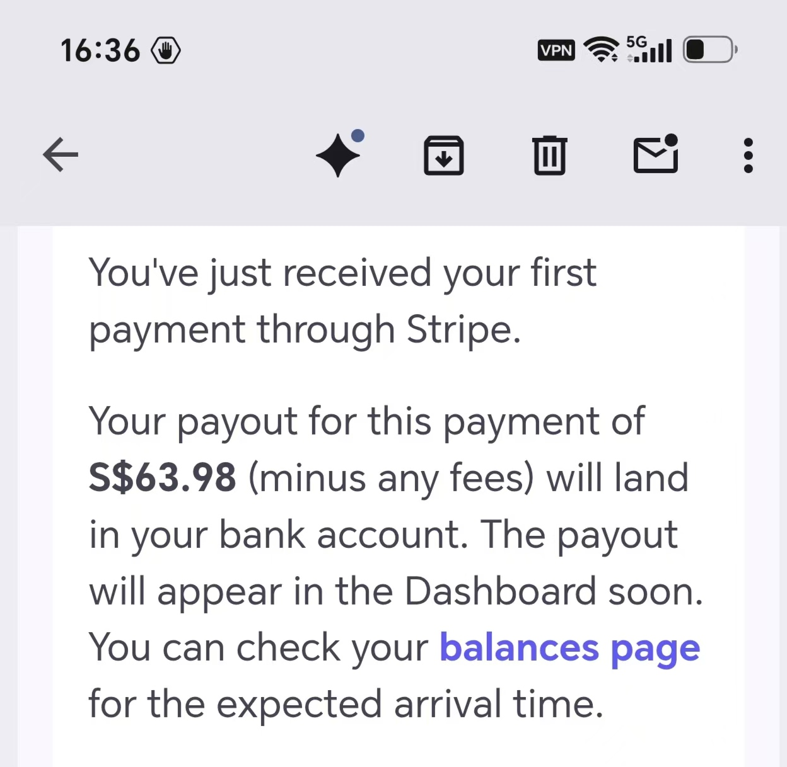
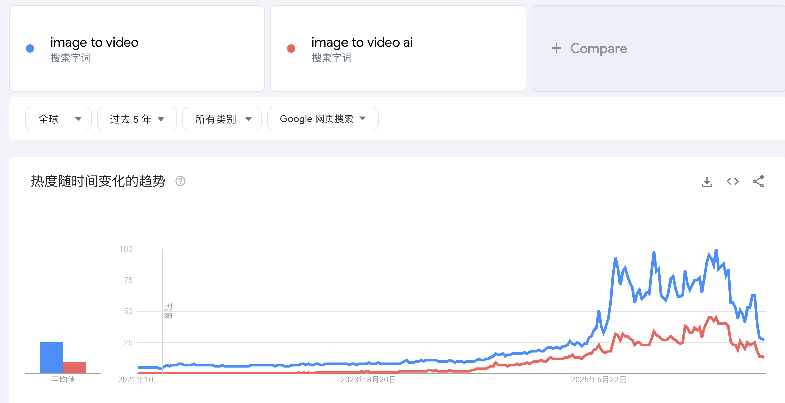
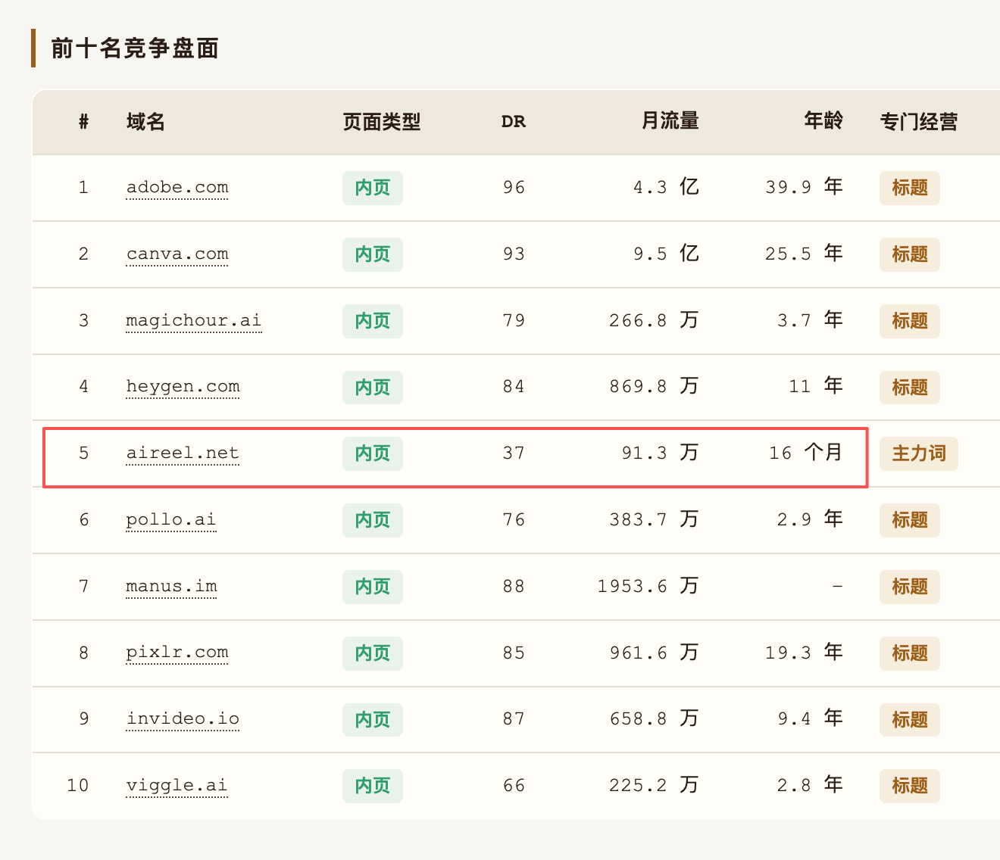

把两段 2026年10月22日的群聊放在一起看，结论很集中：已经火了几天的词，其新变体仍可能成为新站入口；但真正决定能否拿到正反馈的，不是追最早的原词，也不是先做一个自我感觉完美的网站，而是找到同一需求下仍然新鲜、有人搜索、且已有付费意愿的表达。
两段对话的共同结论
一段对话回答“旧热点出现新变体还能不能做”，给出 Sprunki、Image to Video 等实例；另一段用群友的真实首单说明，有付费意愿的新需求比闭门打磨产品更快带来反馈。两段话拼在一起，形成一条完整路径：识别需求，找出新表达，快速上线验证，再用数据和竞争变化决定是否继续投入。
| 问题 | 聊天中的证据 | 可执行结论 |
|---|---|---|
| 火词的新变体还来得及吗？ | Sprunki 的多个变体都有人做站并获得排名；Image to Video 变体在 2024 年后持续升温。 | 只要表达足够新、竞争尚未饱和，就仍可按新词切入。 |
| 新站怎样更快获得正反馈？ | 一个多月的“完美网站”得到 0 访客；跟热点半天做的站，5 个访客带来第一单。 | 先验证真实需求，再补产品完成度，不要反过来。 |
| 变体流量能持续多久？ | 哥飞曾靠 Image to Video 做到一天 8,000 UV，但只上导航站，后来被更多新站挤下去。 | 短期窗口不等于长期壁垒，仍需外链与持续选词。 |
| 怎样找大需求下的小表达？ | 群聊最后给出 80 分钟教程链接。 | 把“需求大、表达新、竞争弱”作为一套连续筛选动作。 |
这些是群聊中的个人经验与单个案例，不是对市场收益的保证。可迁移的是判断顺序：先寻找真实搜索与付费意愿，再用最低成本验证；不能因为一个首单案例就推断所有热点站都能复制相同结果。
案例一：5 个访客拿到第一单
群友 zhouming 的对照很直接：此前花了一个多月，做了一个自我感觉完美的网站，结果是 0 访客、0 用户；后来跟着热点只花半天做的网站，在 5 个访客时拿到了第一单。聊天中的 Stripe 通知显示，这笔付款的结算金额为 S$63.98（邮件注明尚未扣除相关手续费）。

这个案例最值得记录的不是金额，而是顺序：先有真实需求与可付费场景，再快速做出能承接需求的最小页面。产品细节并非不重要，但在还没有流量与付费验证前，长时间打磨很容易把精力花在无人验证的功能上。
还是得抓住需求本身。有付费意愿且当下有人搜索的新需求，是新人拿到正反馈的最佳方法。
案例二：热点词的变体仍是新入口
哥飞先给出明确结论：旧词出现新变体时可以继续做。Sprunki 当时出现了很多变体，每一个变体都有人上站并拿到排名和流量；他也曾用一个变体上站，一天拿到几千访问量。关键不是“这个需求是否已经出现过”，而是“这个表达是否仍然足够新，第一页是否还有无竞争空间的切入口”。
Image to Video 是更长期的例子。AI 视频生成在 2023 年已经出现，Image to Video 是后来形成的新表达；Sora 和 Kling 在 2024 年出现后，这个变体继续升温。哥飞在 2024 年 8 月上站主打该词，到 11 月一天获得 8,000 UV。聊天附带的两张截图分别用 Google Trends 和竞争盘面支持这一判断。

趋势图只能说明搜索兴趣存在，不能单独证明商业价值。它适合用来确认方向：image to video 与 image to video ai 在五年维度上都有明显抬升，新变体并非无人搜索的生造词。接下来还要看搜索结果是否被少数大站完全占满，以及新域名有没有进入前排。

竞争截图里，前排既有 Adobe、Canva 等高 DR 老站，也有约 16 个月、DR 37 的 aireel.net 进入前五。它证明的不是“新站很容易赢”，而是：在大需求下，新域名仍可能在某个清晰表达上拿到一席之地。判断时要同时看对手强度、页面类型和新站占比，不能只看到搜索量上涨就上站。
可直接照做的筛选顺序
把两段聊天转成动作，顺序应当是需求优先、表达第二、产品最后，而不是先写代码再猜谁会来。
- 先找已有付费意愿的需求：看用户在搜什么、买什么，不从“我想做什么”出发。
- 拆出同一需求的不同表达：原词、变体、长尾说法、新组合词分别列出来。
- 验证搜索与竞争：用 Google Trends 看趋势，再检查第一页是否全是老站、大站或工具站。
- 优先选择新出现且竞争较弱的表达，确认已有新域名进入前排，而不是盲目追最早的原词。
- 用最低成本上线最小可用页面，先把核心任务和支付链路跑通，让真实访客给出反馈。
- 上线后同时看收录、流量、付费和竞争变化；变体流量起来后，继续补外链与内容，避免只靠导航站。
边界与风险
- 单个 5 访客首单只能证明路径存在，不能证明可规模化。高客单价场景尤其容易让极小样本看起来很好。
- 变体窗口来自竞争尚未饱和，不代表需求永久属于你；更多站发现后，排名和流量会迅速被稀释。
- 只会上导航站并不等于完成 SEO。案例中的 8,000 UV 站点后来被更多新站挤下去，说明获客渠道需要持续建设。
- 聊天截图是当时的经验证据，不是实时市场结论；真正执行前要重新核对 2026年10月22日之后的最新搜索与竞争数据。
完整聊天记录
以下按时间顺序合并两段群聊，保留参与者、原始时间、链接与图片占位。两段原文共 17 条，其中 1 条为空消息，实际保留 16 条；上方三张截图分别对应聊天中的三张图片。